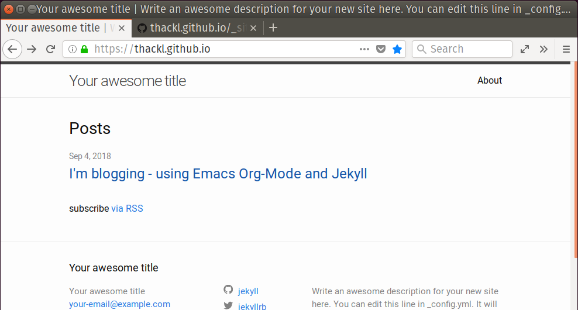

Blogging with Emacs Org-Mode and Jekyll
I've been thinking about getting my own blog up for more than a while now, and finally made it happen! This is is my first post, and it will cover the basics steps I took to get this site up and running.
During my day-to-day work, I make heavy use of Emacs, Emacs Org-Mode, git and GitHub. So it only felt natural to also go and try to use those tools for my blogging adventure. And for the purpose of this post, I will assume a basic familiarity with those tools. After reviewing a few options on org-blog-wiki, I found a combination of Org-Mode and Jekyll to be the most promising route. And as it turns out, setting it up is indeed quite straightforward.
First, we need Jekyll and Ruby. If you're on a current Ubuntu, the following commands should do.
# install command on Ubuntu sudo apt -y install ruby ruby-dev build-essential # set up local ~/ruby-gems folder in .path gem install jekyll bundler jekyll-sitemap pygments.rb
Next, we need to set up the blog, populate it using a Jekyll template structure, and push it to GitHub. And at this point, we are already live!
cd ~/projects/communicate/blog git init git create thackl.github.io # use your own username here jekyll new --force . # otherwise complains about non-empty bundle exec jekyll serve # now it runs locally: http://localhost:4000/ sed -i '/_site/d' .gitignore # remove _site from .gitignore git add * git commit -am 'jekyll scaffold' git push -u origin master # we're live: https://thackl.github.io/
What is still missing, though, is a way to write blog posts in Org-Mode, and somehow convert them so they can be hosted by Jekyll. To achieve this, we will rely on Emacs publishing engine which offers conversion of .org pages to .html pages. There are different ways how to set the overall blog structure, depending on whether one wants to be able to write all pages, including the front page, about pages, etc. using org, or just the posts themselves.
For the sake of simplicity, I went with option two: I only write the actual posts in Org-Mode, but not any of the other content pages. To do this, we need two things:
A sub-directory to store the org-posts in
mkdir _org && cd _org
and a minimal configuration for the org-mode publishing system in our
~/.emacs, so the html exports end up at the right location.
(setq org-publish-project-alist '(("thackl.github.io" ;; my blog project (just a name) ;; Path to org files. :base-directory "~/projects/communicate/blog/_org" :base-extension "org" ;; Path to Jekyll Posts :publishing-directory "~/projects/communicate/blog/_posts/" :recursive t :publishing-function org-html-publish-to-html :headline-levels 4 :html-extension "html" :body-only t )))
Now, we are ready to write our first simple post. Start with opening a file at
_org/YYYY-MM-DD-first-post.org substituting YYYY-MM-DD with today's
date. Add a Jekyll-style Front Matter section with some required meta
information.
--- layout: post title: "Using org-mode with Jekyll" excerpt: Introduce how to use Emacs's Org-mode with Jekyll to generate GitHub Pages ---
Then, add some content, aka this, and finally, run the Emacs publishing
command C-c C-e P f to convert _org/2018-09-04-foo-post.org to
_posts/2018-09-04-foo-post.html.
Now check http://localhost:4000/ to see a local copy of your post (make sure
bundle exec jekyll serve is still running). If you like what you see, commit
and push the changes, so that they appear on your https://USERNAME.github.io/
site. Now it should look something like this:
